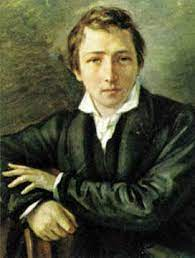

Heinrich Heine

Christian Johann Heinrich Heine (1797- 1856).
Năm 1897, khi ngày sinh lần thứ 100 của Heinrich Heine (1797- 1856) được kỷ niệm ở nước Đức, toàn bộ thơ ca của ông đã đạt tới một đỉnh cao – nhưng tất nhiên là theo một nghĩa tiêu cực. Rút cuộc, giới độc giả tư sản, với những luận điệu như “ủy mị” và “nhảm nhí”, cũng đã làm được cái việc là mổ xẻ tới từng từ, từng chữ tư tưởng của Heine, nhà thơ những tưởng là ngây ngô của riêng họ. Còn những gì không phù hợp với hình ảnh sai trái này của thi sĩ lãng mạn, tác giả của bài thơ nổi tiếng Loreley, thì đã bị gạt khỏi nhận thức của đông đảo độc giả lúc bấy giờ.
Ngày nay chúng ta đều biết rằng nhà thơ “nhảm nhí” ấy chỉ là bước chuẩn bị cho “nhà thơ bị đốt cháy” của năm 1933. Với việc thiêu hủy các tác phẩm của Heine, bè lũ quốc xã Đức cho rằng chúng đã có thể xóa sạch vĩnh viễn hình ảnh của “nhà thơ Do Thái” khỏi tâm trí của những người Đức.
Trong vở bi kịch Almansor diễn ra trong bối cảnh của các cuộc chiến tranh tín ngưỡng, Heine, với một linh cảm tiên tri đáng ngạc nhiên, đã biểu đạt ý nghĩa của những hành động ma quái cực đoan kiểu này như sau: “Đó chỉ là đoạn mở màn, ở nơi người ta đốt sách, ở đó cuối cùng người ta cũng sẽ thiêu đốt con người”.
Những đánh giá sâu sắc của Heine về những sức mạnh thúc đẩy sự phát triển chính trị và xã hội ở nước Đức, và rộng hơn là ở châu Âu thời kỳ bấy giờ, vẫn còn giữ được tính thời sự cho đến tận ngày nay. Thêm vào đó là những nét mâu thuẫn trong tiểu sử nhà thơ, dẫn tới một thực trạng là con người và tác phẩm của Heine vẫn tiếp tục được tranh cãi không biết bao giờ kết thúc.
Dường như có một lý do chính để dẫn giải cho sự tranh cãi này: Tình trạng ngoài cuộc của Heine. Ông là kẻ ngoài cuộc với tư cách là một nhà văn tự do, ít định cư, người hầu như không có gì gắn bó với nước Đức đương thời, là kẻ ngoài cuộc với tư cách một người Do Thái.
Trong giới Do Thái, ngay từ nhỏ Heine đã sớm nhận ra những gốc rễ của tình trạng ngoài cuộc của mình. Năm 1797 khi cậu bé Heine chào đời ở Duesseldorf, những người Do Thái định cư tại đó không sống trong “Ghetto” (khu định cư người Do Thái-ND) như ở thành phố Frankfurt bên sông Main, thế nhưng họ vẫn đón nhận cuộc kéo quân chinh phạt của Napoleon ngày 3 tháng 11 năm 1811 như là một cuộc giải phóng. Đối với cậu bé Heine 13 tuổi khi ấy thì Napoleon, người mà cậu đã tận mắt trông thấy khi vị hoàng đế này cưỡi ngựa đi qua khu vườn lâu đài ở Duesseldorf, đã trở thành người anh hùng, người đem lại sự bằng an cho các đồng bào của cậu. Trong thực tế, thông qua các cải cách của Napoleon, điều kiện sống của người Do Thái ở Đức, đặc biệt là ở vùng sông Ranh, đã được nâng cao hơn một chút. Chỉ có điều may mắn này đáng tiếc lại không rơi vào gia đình Heine: Năm 1819 hãng kinh doanh của cha cậu bị phá sản. Kể từ đó gia đình Heine sống nhờ vào sự trợ cấp hảo tâm của ông chú giàu có và thành đạt Salomon ở Hamburg. Dưới sự bảo trợ của ông này, dần dần Heine được định hướng - và được xác định là cần phải đi tìm sự thành đạt của mình trong vai trò của một thương gia.
Tuy nhiên Heine hoàn toàn không có hứng thú với công việc buôn bán, anh thích sáng tác thơ hơn và thêm nữa lại phải lòng Amalie, một trong các cô gái của ông chú. Nhưng Amalie đã cự tuyệt ông anh họ đáng thương, và thế là cùng với sự tan vỡ của “những chiếc bong bóng xà phòng” của tư tưởng trọng thương, còn có một mối tình đầu bất hạnh, nghĩa là thêm một lần kinh nghiệm rằng ngay trong nội bộ gia đình, Heine vẫn lại là một người ngoài cuộc - và hơn thế, trong cộng đồng Do Thái chàng trai trẻ Heine cũng luôn luôn là một kẻ ngoài cuộc.
Kể từ đó đề tài tình yêu bị chối bỏ đã trở thành một mô típ cố định trong thơ của Heine. (Tôi tìm tình yêu khắp nơi, khắp nẻo/ Gõ vào các cánh cửa mỏi rời tay/ Nhưng chỉ nhận những cái nhìn lạnh lẽo…/ Tìm không thấy tình yêu con trở về với mẹ/ Con bỗng thấy mình thanh thản đến thế/ Trong đôi mắt dịu hiền của mẹ, mẹ ơi).
Tuy nhiên cũng phải còn lâu, Heine mới trở thành thi sĩ trong những năm tháng này. Bà mẹ nhiều tham vọng đã gửi cậu con trai vào trường luật ở Bonn. Thế nhưng cả môn luật học cũng chỉ thực sự thu hút được chút ít sự quan tâm của Heine. Thế vào đó, văn học, triết học và môn lịch sử lại gây hứng thú nhiều hơn đối với chàng trai trẻ Heine.
Một năm sau, Heine chuyển về Goettingen và tại đó một lần nữa chàng lại nhận ra mình là kẻ ngoài cuộc: Các hội nhóm thanh niên (mà tư tưởng yêu nước và bài quân chủ của họ đã cuốn hút Heine ngay từ khi chàng còn ở Bonn và có lẽ đã tạo cảm hứng cho các bài hát và tình ca về Tổ quốc thời kỳ đầu sáng tác của Heine), tìm cách rũ bỏ các thành viên người Do Thái của họ ngày càng cương quyết hơn.
Ở Đức, trong thời gian này, công cuộc phục hồi từng bước sau các cuộc chiến tranh giải phóng đã bắt đầu lan rộng; và Heine chuyển về Berlin. Tại đó chàng đã làm quen với tư tưởng triết học duy tâm của Hegel - tư tưởng đã ảnh hưởng sâu sắc tới Heine, tạo cơ sở cho các tác phẩm phê bình tôn giáo và triết học về sau này của ông.
Ở Berlin, Heine đã nhanh chóng tìm đến các “salon” văn học mà phần lớn số đó là do các quý bà, quý cô Do Thái chủ trì. Heine có qua lại thường xuyên trước hết với “salon” của Rahel Varnhagen, tại đó chàng đã được làm quen với những nhà tư tưởng lớn như Alexander von Humboldt, Friedrich Schleiermacher, Adelbert von Chamssio và Mendelssohn.
Nhờ sự giúp đỡ của Varnhagen, Heine đã xuất bản tập thơ đầu tiên của mình năm 1822. Tuy vậy ngay cả ở đây, cuối cùng Heine cũng đau đớn nhận ra tình thế ngoài cuộc của mình, và rằng những cố gắng để tìm được một chỗ đứng vững chắc trong nghề nghiệp và xã hội của mình đã không thu được thành công như mong đợi.
Vì lẽ đó ông đã quay trở về Goettingen, một chốn tỉnh lẻ, ít được yêu thích, hoàn thành luận án tiến sĩ của mình tại đó và quyết định theo đạo Cơ đốc. Thế nhưng lễ rửa tội, việc thụ giáo của ông lại được Heine giữ bí mật. Phía sau những sự kiện này ít chứa đựng một đức tin tôn giáo hơn là mong muốn về một sự hòa đồng, bởi vì đối với chàng trai 27 tuổi khi ấy những câu hỏi về tương lai, về sự tồn tại của nghiệp văn đã được đặt ra cấp thiết hơn lúc nào hết.
Từ Harry Heine đã trở thành Heinrich Heine. Nhưng chẳng bao lâu ông đã rất ân hận vì bước đi này của mình, khi nhận ra rằng việc thụ giáo không mặc nhiên đem lại cho mình sự hòa đồng mong ước vào xã hội đương thời. “Giờ đây tôi bị ghét bỏ, cả ở trong giới Thiên chúa, cả ở trong giới Do Thái”, ông đã viết như vậy cho một người bạn.
Heine là một trong những người đầu tiên ở Đức đã thành công trong việc chiếm lĩnh thị trường sách ở nước này. Sự thành công ấy có liên quan mật thiết với ông chủ xuất bản Julius Campe, người mà Heine đã làm quen ở Hamburg năm 1826 - một quan hệ với nhiều thăng trầm cho tới lúc Heine mất. Vậy là ngay năm 1826 tập thơ đầu tiên Những bức tranh du ngoạn của Heine được ra đời tại Nhà xuất bản Holfmann & Campe. Cuốn sách này, chỉ sau một thời gian ngắn phát hành, đã khiến Heine trở nên nổi tiếng, chẳng những ở Đức mà còn cả ở Pháp.
Lối viết tiểu luận rất sắc sảo, một sự hòa trộn giữa nhiều yếu tố khác nhau còn mới lạ vào thời kỳ đó, tính luận chiến và châm biếm mà ông thường xuyên dùng để phá vỡ và làm tiêu tan những sắc thái lãng mạn, đã khiến ông trở thành người mở đường cho một giọng văn mới, trẻ trung mà trong đó phản ánh toàn bộ sự đổ nát và rạn nứt xã hội của thời kỳ này.
Được khích lệ bởi thành công lớn của Những bức tranh du ngoạn, Heine đã thúc giục nhà xuất bản của ông cho phát hành tổng tập những bài thơ thời trẻ của mình. Campe đã chống lại ý định này với lập luận rằng thời kỳ hậu lãng mạn là không thuận lợi đối với thi ca. Cuối cùng Heine chỉ còn cách không lấy tiền nhuận bút của cuốn sách này để làm thay đổi ý kiến của các nhà xuất bản.
Cuốn sách những bài thơ, một trong những tác phẩm nổi tiếng khác của Heine, đã nằm im trên các quầy sách trong suốt hai mươi năm ròng. Thế nhưng bất đồ, từ 1837 trở đi, tác phẩm này đã trở thành một cuốn “bestseller”. Tuy nhiên Heine đã chẳng hề thu được một xu nào từ cuốn sách này. Chủ đề hàng đầu của dòng thơ giàu tính dân ca thời đầu sáng tác này của Heine là những mối tình không được đền đáp. Sự thực ở đây cũng lại đề cập tới một chủ đề trung tâm của cuộc đời Heine: Kinh nghiệm đau đớn của một người bị đẩy ra ngoài cuộc, sự lang bạt của một nhà thơ hiện đại, cái giá cho tự do của ông.
Ngay từ cuốn Những bức tranh du ngoạn, do sự phê phán gay gắt các mối tương quan chính trị, đã bị kiểm duyệt trên phần lớn các lãnh địa thuộc Đức hoặc hoàn toàn bị cấm. Từ đó trở đi Heine đã gặp rất nhiều phiền nhiễu do các tác phẩm của ông luôn luôn bị kiểm duyệt.
Năm 1830, từ hòn đảo Helgoland, Heine nhận được tin về cuộc Cách mạng tháng Bảy ở Pháp. Tin tức này càng tăng thêm mong muốn được nhen nhóm từ lâu trong thâm tâm Heine là rời bỏ nước Đức. Tháng 5 năm 1831 ông di cư sang nước Pháp tự do, bắt đầu thời kỳ sáng tác thứ hai của mình.
Tại Paris, ông cảm thấy mình được giải phóng như thể vừa mới được tái sinh. Ông đã viết cho một người bạn: “Nếu có ai đó hỏi bạn rằng tôi cảm thấy ở đây ra sao, thì bạn hãy bảo rằng nếu ở đại dương có một con cá hỏi một con cá khác về tâm trạng của nó, con kia sẽ trả lời thế này: Tôi cảm thấy như Heine ở Paris”. Paris đối với Heine là “phòng chờ của xã hội châu Âu” và là “thủ phủ của toàn thể thế giới văn minh”. Trong một chừng mực nào đó, sẽ không quá cường điệu khi người ta coi Heine là một người Âu tâm huyết và là một công dân thế giới. Ông đã nhận ra trước một trăm năm mươi năm cái điều rằng trước hết đối với châu Âu, các Nhà nước theo chủ nghĩa dân tộc sẽ không có tương lai lâu dài, rằng một sự cải tổ chính trị và xã hội sẽ là không dừng được. “Nàng trinh nữ châu Âu” cuối cùng sẽ trở thành một người đàn bà chín chắn.
Có lẽ người ta phải nhìn nhận trong Heinrich Heine con người nổi tiếng đầu tiên mang ý tưởng phấn đấu cho một châu Âu hòa đồng. Những gì được Heine đề cập tới trong một cuốn sổ ghi chép về đề tài nước Đức đã gần như là những điều tiên tri: “Người Đức bận tâm với tính dân tộc của mình, nhưng họ đã quá chậm chân. Khi họ hoàn thành cái điều na ná thế thì bản chất dân tộc trên thế giới đã chấm dứt và họ cũng sẽ từ bỏ ngay chủ nghĩa dân tộc của mình mà không thu được lợi ích gì từ đó như người Pháp hay người Anh”. Nước Đức luôn là chủ đề trung tâm trong sáng tác của Heine. Trong cuốn sử thi bằng thơNước Đức, câu chuyện cổ tích mùa đông được phát hành năm 1844 sau một chuyến du lịch mùa thu qua khắp nước Đức của Heine, ông đã bày tỏ một kiểu phục hận với nước Đức. Hẳn là không có một tác phẩm thứ hai nào lại được những người cùng thời của Heine bàn luận một cách mạnh mẽ và say sưa đến vậy. Với những tiết thơ giản dị, mang tính dân ca, Heine đã viết nên câu chuyện trào phúng chính trị ắt hẳn là quan trọng nhất cho đến nay trong tiếng Đức. Trong đó ông chẳng những đã kết hợp một cách đầy nghệ thuật tính khôi hài với những khúc bi thương, sự bi thảm với những tình tiết hóm hỉnh, mà còn phê phán sâu sắc tình trạng chính trị và xã hội nước Đức vào đêm trước của một cuộc cách mạng tư sản. Sự bùng nổ của cuộc cách mạng vào đầu năm 1848 này và thất bại nhanh chóng của nó đồng thời diễn ra với sự suy sụp thể chất của Heine, điều này chẳng những đã được các công trình tiểu sử của ông mà ngay cả bản thân ông cũng nhận thấy, theo cái biểu tượng: sự sụp đổ của tất cả những hy vọng vào một cuộc cách mạng dân chủ và thành công ở nước Đức.
Một chứng bệnh đau cột sống không cách gì chữa khỏi mà những triệu chứng đầu tiên của nó đã xuất hiện trước đây hàng chục năm đã buộc Heine, trong tình trạng gần như liệt toàn thân, phải giam mình trong suốt tám năm cuối đời của mình. Không chịu ảnh hưởng của những nỗi đau thân thể, sức mạnh thi ca của Heine vẫn mãi trường tồn cho tới phút cuối cùng. Và vẫn không mảy may bị đứt đoạn là mạch văn hóm hỉnh, mỉa mai, nhiều lúc như châm chọc mà ông vẫn dùng để tự luận bàn một cách thi vị về cái chết của mình. Những chủ đề chính trong những bài thơ về sau này của Heine là cuộc chia tay với sự tồn tại, kinh nghiệm của khổ đau, và thêm nữa là sự tranh đấu của ông với thế giới Do Thái và với Chúa Trời. Ông, như Heine đã tự nhận trong lời kết của tập thơ Những tình khúc, dường như đã được trở về với “một Chúa Trời của riêng mình” - chứ không phải trong vòng tay của nhà thờ.
KIM HOA